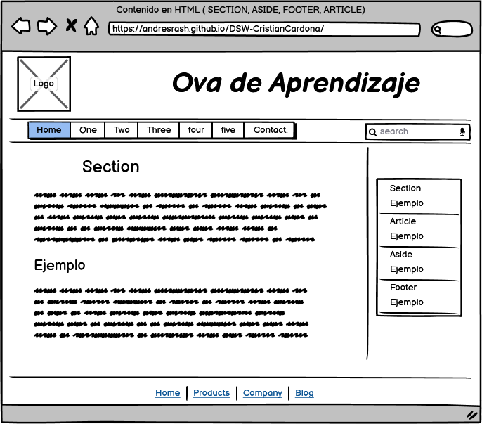

Diseñar una página web sobre el contenido en HTML, haciendo uso de contenido multimedia para fortalecer el aprendizaje durante la actual pandemia.
se realiza explicación del propósito de estos nuevos elementos que son las secciones semánticas, dando un ejemplo global de esto, y su contexto visual con una imagen que lo identifique.
Luego más delante de esta pagina se encuentra con la definición y semántica individual de los 4 elementos mas usados, y un extra de otros elementos que se añadieron a HTML 5.
Son secciones o parte de un especifica de un articulo o revista que se define para tener una característica o contexto.
Su significado podría referirse como ejemplo a las diferentes partes que tiene un periódico, como el encabezado que, con respecto a los artículos de menor relevancia, este segundo tiene un espacio más reducido con un tamaño de fuente menor.
Por lo tanto, Una sección semántica describe claramente su propósito o significado tanto para el navegador como para el diseñador web, Ejemplo:
Las secciones no semánticas: <div> y <span>- son secciones que no describe su propósito especifico o su contenido.
No obstante, las secciones semánticas: <section>, <aside>,<footer> y <article>- se define claramente expresándose en ese mismo orden como <sección>, <lateral>, <pie de página> y <artículo>.
